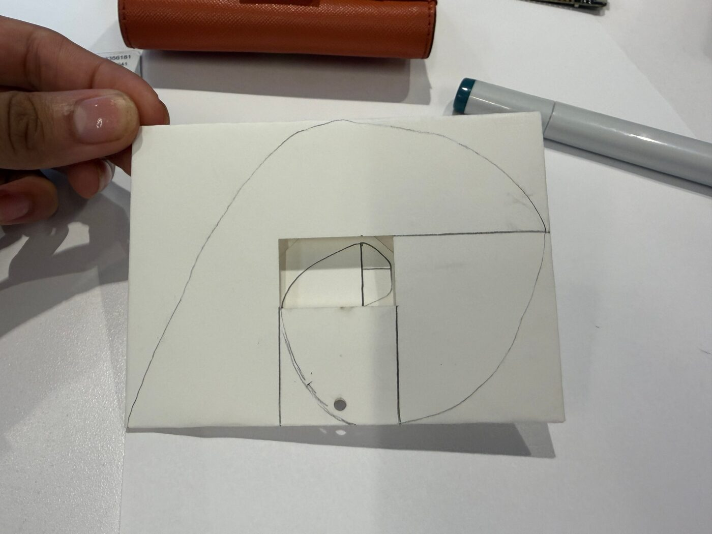
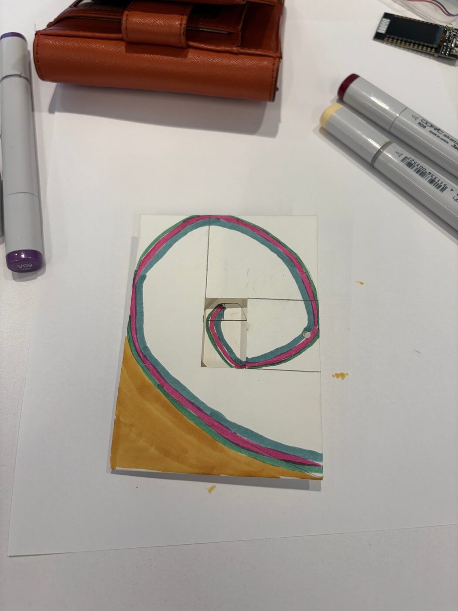
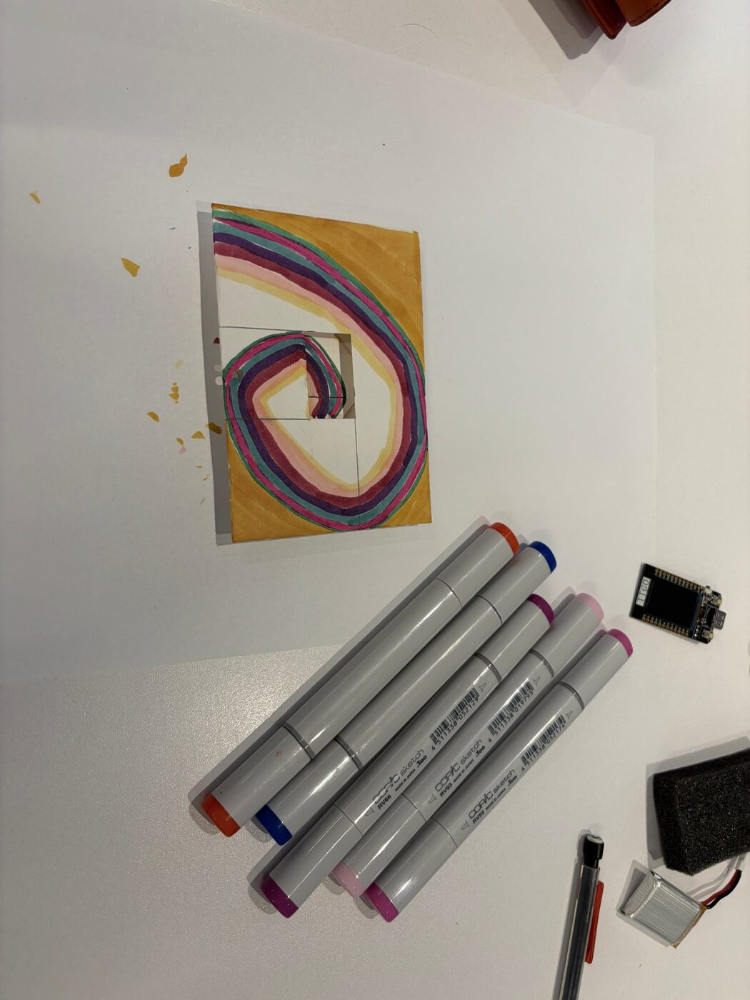
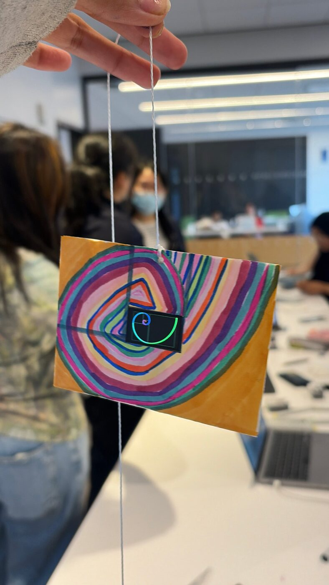
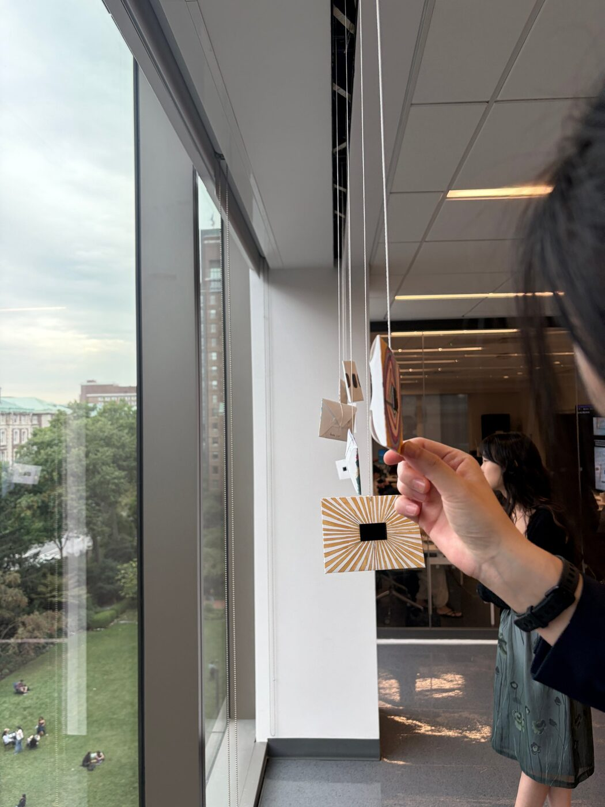
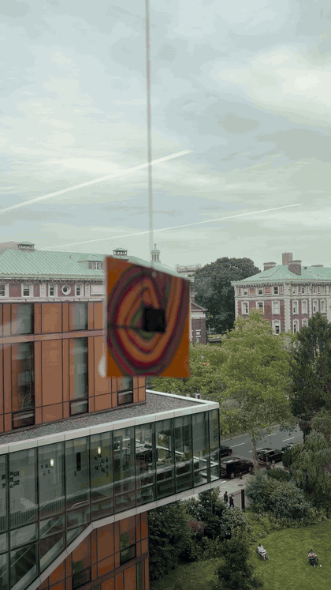

Artistic Vision
For my art installation, I decided to go with something that has always fascinated me: the Fibonacci ratio. I always joke that I will probably mention the Fibonacci ratio within the first 30 minutes of meeting just about anyone. I first heard about it when I was playing around with a stock market candlestick chart and came across an indicator called Fibonacci retracements, which lets you create estimates of price movements following this common pattern. Upon more research, I learned that this spiral appears all through nature, beautifully put by Peter Bernstein in the book Against the Gods:
"The golden mean also appears throughout nature-in flower patterns, the leaves of an artichoke, and the leaf stubs on a palm tree. It is also the ratio of the length of the human body above the navel to its length below the navel (in normally proportioned people, that is). The length of each successive bone in our fingers, from tip to hand, also bears this ratio. The horizontal member of the Cross separates the vertical member by just about the same ratio: the length above the crosspiece is 61.8% of the length below it. In one of its more romantic manifestations, the Fibonacci ratio defines the proportions and shape of a beautiful spiral that appears in the shape of certain galaxies, in a ram's horn, in many seashells, and in the coil of the ocean waves that surfers ride. The structure maintains its form without change as it is made larger and larger and regardless of the size of the initial square with which the process is launched: form is independent of growth" — Peter L. Bernstein, Against the Gods
After I started studying computer science, I realized just how often we use this mathematical formula in writing recursive algorithms: fib(n - 1) + fib(n - 2). I started to notice the beauty of recursion everywhere, a process that continues on forever, yet is completely defined by itself. I remember reading a data structures textbook that compared recursion to looking up a word in a dictionary. You read the definition of a word, only to realize that you don't understand some of the words used to define it. So you look up those words, and then the words within their definitions, repeating the process until you finally understand the original word. Who knows, maybe you'll end up reading an entirely different book along the way, lol. But anyway, I find it beautiful how mathematical concepts like recursion can appear in such ordinary, real-world situations.

Decisions in Building
When I first thought of this idea, I was going to do one continuous spiral that just zooms in (or out) more and more in every frame. I started thinking it would look a bit too trippy, almost hypnotic, so I went with thin lines of spirals, with smaller spirals added to look more like fractal art. I used a random() function to make sure that each frame would be randomized, so that nothing was repeated.
Technical Building
When I programmed this, the hardest part was launching the Arduino IDE and getting all the TFT libraries and packages imported. I spent a few hours vibe coding through this, and eventually I got to start the creative part, which was where I had fun building the code that would turn into art.


Drawing and Installation
The best part was when we had time in class to attach the batteries and color the envelopes. I haven't been in that kind of environment since maybe elementary school art class, where we would be drawing and the teacher would put music on. This day felt very nostalgic.
For my project, I drew another golden spiral surrounding the ESP32 display. Inverting the golden ratio, 1.618, you get 0.618, which is around 2/3, so I used this to map out how the hand-drawn spiral would look.
The board sits in a cutout in the center of a hand-painted card whose concentric spiral echoes the one on screen, so the tiny display reads as the "eye of the hurricane" of a much larger spiral. The card hangs from a string and sways slightly. Just like the Fibonacci spiral, the installation is always moving.


